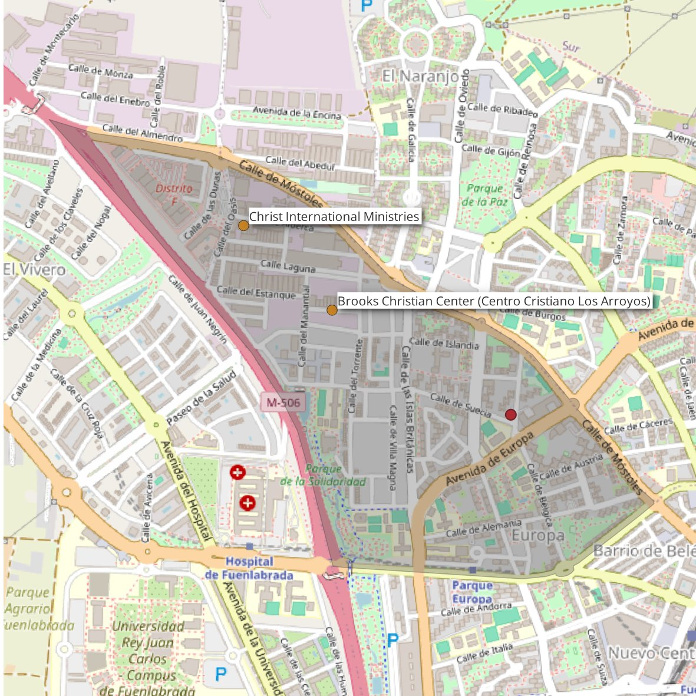
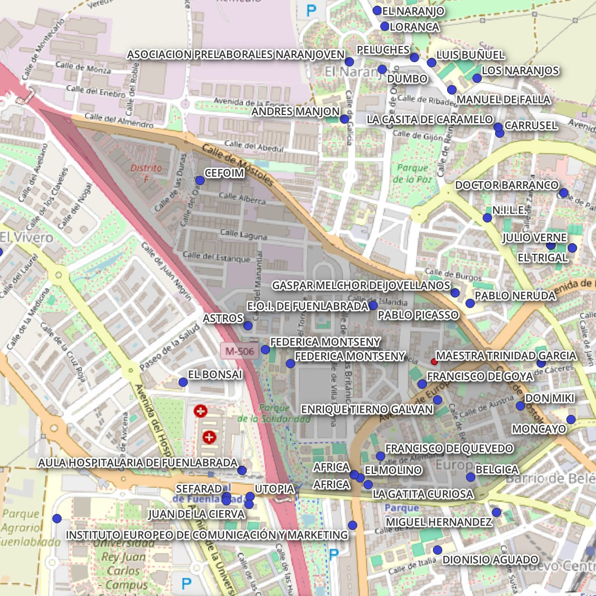

Puntos de interés en el territorio parroquial
Parroquia San Francisco y Santa Clara de Asís (Fuenlabrada) · Arciprestazgo de Fuenlabrada
Entidades religiosas no católicas

2 entidades religiosas no católicas en el territorio de la parroquia.
Evangélicos (2)
- Brooks Christian Center (Centro Cristiano Los Arroyos)Calle Embalse 4 B, Fuenlabrada
- Christ International MinistriesCalle de la Alberca 23, Fuenlabrada
Fuente: Registro de Entidades Religiosas del Ministerio de la Presidencia, Justicia y Relaciones con las Cortes. Situación en el mapa: dirección geocodificada con CartoCiudad (IGN) o Nominatim (OpenStreetMap).
Centros educativos

9 centros educativos en el territorio de la parroquia (público: 7, privado: 2).
| Centro | Tipo | Titularidad | Domicilio | Web |
|---|---|---|---|---|
| AFRICA | Instituto de educación secundaria | Público | Calle Portugal, 41, 28943 Fuenlabrada | Página web |
| BELGICA | Escuela infantil privada | Privado | Calle de Bélgica, 3, 28943 Fuenlabrada | |
| E.O.I. DE FUENLABRADA | Escuela oficial de idiomas | Público | Calle Islandia, 1, 28942 Fuenlabrada | Página web |
| EL MOLINO | Escuela infantil | Público | Avenida de Europa, 25, 28943 Fuenlabrada | Página web |
| ENRIQUE TIERNO GALVAN | Colegio de educación infantil, primaria y secundaria | Público | Avenida de Europa, 11, 28943 Fuenlabrada | Página web |
| FEDERICA MONTSENY | Centro público integrado de formación profesional | Público | Calle Torrente, 52, 28942 Fuenlabrada | Página web |
| FRANCISCO DE GOYA | Colegio de educación infantil y primaria | Público | Avenida de Europa, 4, 28943 Fuenlabrada | Página web |
| FRANCISCO DE QUEVEDO | Colegio de educación infantil y primaria | Público | Calle de Alemania, 18, 28943 Fuenlabrada | Página web |
| LA GATITA CURIOSA | Escuela infantil privada | Privado | Calle de Francia, 48-50, 28942 Fuenlabrada |
Fuente: registro de centros educativos de la Comunidad de Madrid. Solo se recogen los centros de alta.